Decision to go Visit Bahrain on Days Off
In between scheduled flights, sometimes we used to get random days off which could be quite long. In one of those days, myself and two of my best friends had 4 days off at the same time which rarely happened. We decided to make use of this rare opportunity and go somewhere together, so we booked tickets to Bahrain which was like an hour and 10 minutes only from Abu Dhabi by Air. We landed at Bahrain International Airport, and we decided to rent a car to have more freedom and an easy way to explore it, and then the whole fun began. It is actually recommended for any travelers to Bahrain to take the option of renting a car because the island is too small, and it is easier to go and discover places and roam around with a car than taking a taxi which is the other option there.
Image: my friends and I in Bahrain Fort, Beach and Midnight Cravings
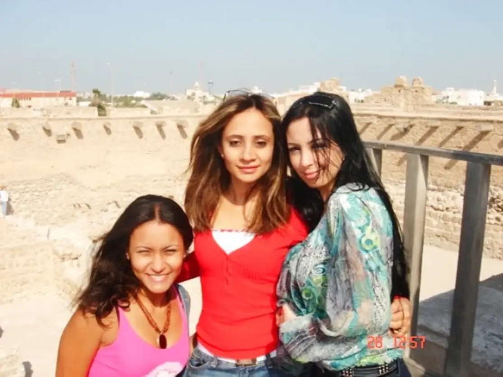 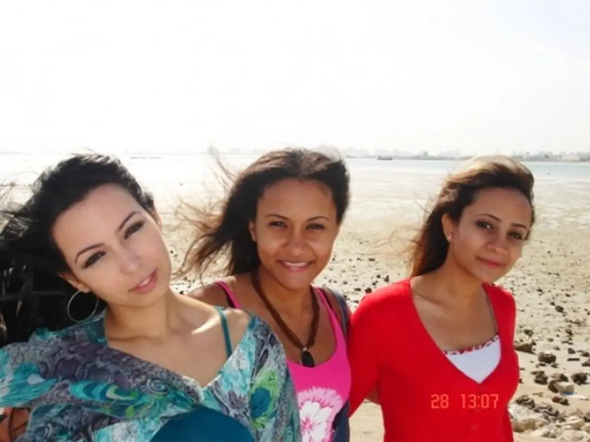
Bahrain is a very small beautiful island, and Bahrain in Arabic means: The Two Seas. The reason for being named with that name is that there are two sources of water there, the sweet and the salty water. Bahrain is a very safe place to go out at any time during the day or night. People there are very friendly and very helpful. The place kept its old heritage sites which include old markets, castles, museums and traditional restaurants, and at the same there is a modern part which includes modern restaurants, shopping malls and skyscrapers. Bahrain is considered one of the 6 Gulf Cooperation Council (GCC) countries , together with Saudi Arabia, United Arab Emirates, Kuwait, Oman and Qatar. One common feature among those 6 countries is the Arabian hospitality, palm trees, Arabian dates, the desert and the hot climate. There, you will get to experience the true meaning of Arabia which is the Traditional name of the Arabian Peninsula. You can visit Bahrain through air travel, cruise ships and if you are located in Saudi Arabia you can drive over to Bahrain through a bridge that connects them together. Most of the Saudi Nationals visit Bahrain over the weekends to change the location and have fun in a nearby destination.
Old Bahrain
Bahrain is a very small place, and we realized that 4 days there were actually too long. You could basically see everything there in like 3 days, however we still enjoyed every single moment of those 4 days. I recommend that you start seeing Old Bahrain first before going to the modern part. The modern parts are similar in all the other 6 Gulf countries, and the old heritage sites are what gives each place its special identity that talks about its historical background that is only relevant to it.
We started by visiting the National Museum of Bahrain which has arts, statues and manuscripts that belong to more than 5000 years ago. The museum will give an idea about the history of Bahrain which can serve as a good start before seeing anything else. It is considered one of the main island’s attractions that everyone who visits Bahrain must pass by and visit. The museum will take you back to the days where the civilization of Dilmun Empire, Tylos started in Bahrain and was then followed by Islam later on.
Images: National Museum of Bahrain (inside) & Qa’lat Al Bahrain
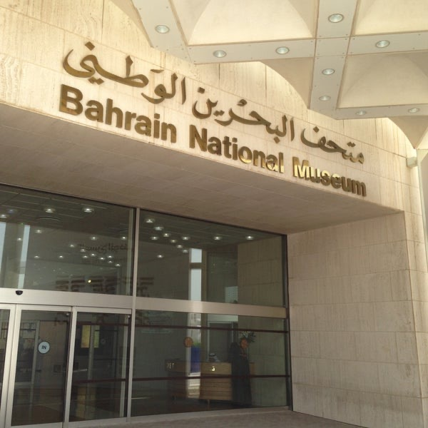 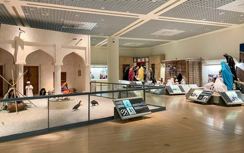The next suggested historic place to visit is Qa’lat Al Bahrain, and Qa’lat means fort or castle in Arabic. It is a UNESCO World Heritage-listed attraction.That place is an artificial mound or hill that was formed out of the many human occupations that Bahrain had passed through in its history. On top of these mounds is a Portuguese fort, which was the reason the whole place was referred to as Bahrain Fort or Qa’lat Al Bahrain. During the Dilmun civilization era, that site was the capital of Dilmun. There is an old lighthouse over the sea there, which is a sea tower now, which signifies the importance of Bahrain as a trade route through the sea in that region. You can manage to capture spectacular photos on the mounds, the fort and by the sea in that marvelous location.
Images: Qa’lat Al Bahrain
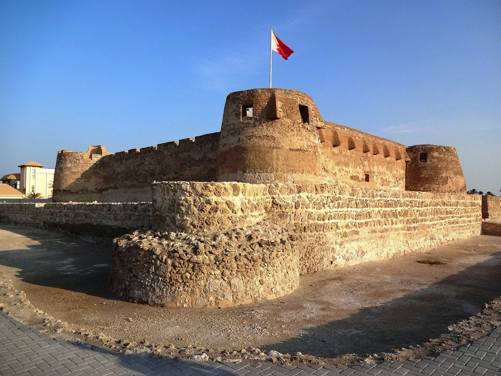 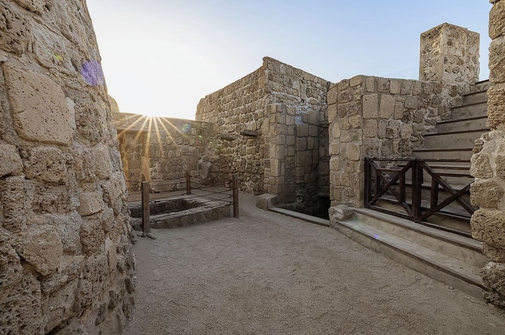Bahrainis were famous for being pearl merchants and pearl traders. It was a common industry in the Gulf region before the discovery of oil. You can enjoy visiting the traditional Bahraini House of Sheikh Isa Bin Ali who was a renowned pearl merchant in the old days where you can see the architecture and structure of how the old houses were, and its famous wooden carved doors. This house is located in a city in Bahrain called Muharraq which is a district full of ancient restored houses which are nice for a stroll through its narrow ancient lanes, especially before sunset when the golden sun rays reflect on them giving them a special charm.
Images: Old Souq
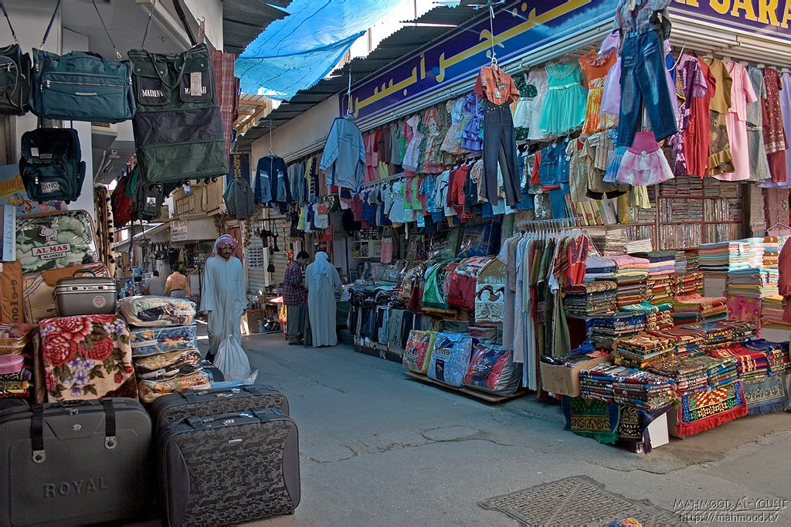

Al Fatih Grand Mosque, is one of the largest mosques in the world as it can fit 7,000 people for prayers. You can borrow head scarves and abayas (long cloaks or robes) from there, which are considered the conservative Muslim women's outfits, and they are required to be put on before entering religious Islamic sites. Inside the mosque, there is a big dome in the ceiling that is made of fiberglass and it is the largest fiberglass dome in the world so far.
Image: Al Fatih Grand Mosque, Manama Souq, Bab Al Bahrain
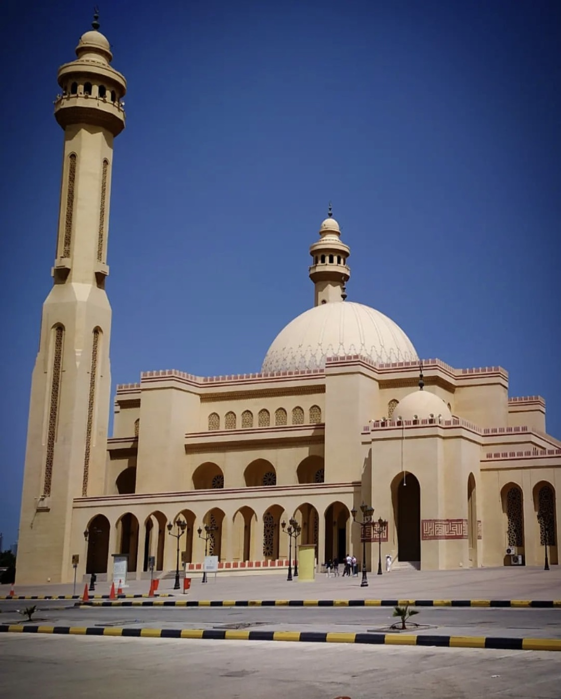 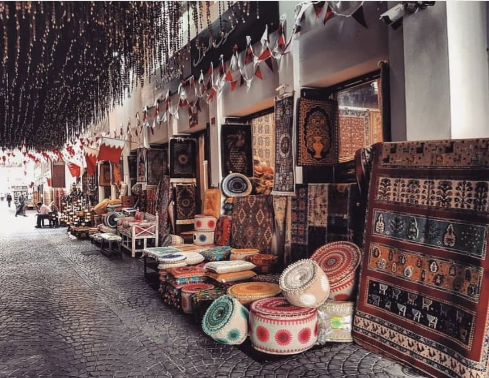
A visit to Manama Souq is definitely a must, and while being there you will also get to see another important site which is Bab Al Bahrain. Souq means old market market in Arabic and Manama is the capital of Bahrain, and Bab Al Bahrain is the gateway of Bahrain, which means the Door to Bahrain if translated from Arabic to English. You can basically access the old market through this gate, which would be like hitting two birds with one stone. This Souq is famous for selling old spices, Arabic perfumes, pearl jewelry and carpets. It is an open-air market and you might feel overwhelmed by the heat and humidity especially if you are there during the hot summer months, however the good note is that you can bargain when you purchase anything. The sellers there like to have conversations with the tourists and they tend to lower the prices very much to let the visitors enjoy and have memorable experiences. The ideal time to visit Bahrain or any other gulf region is from November to March, the weather is just wonderful and perfect for outdoor venues during those months.
Modern Bahrain
It is worth it to see the Manama Skyline which is full of dazzling skyscrapers including the famous Twin Towers, which have the Bahrain World Trade Center.
Image: The Twin Tower, Skyline & Muharraq Bridge
 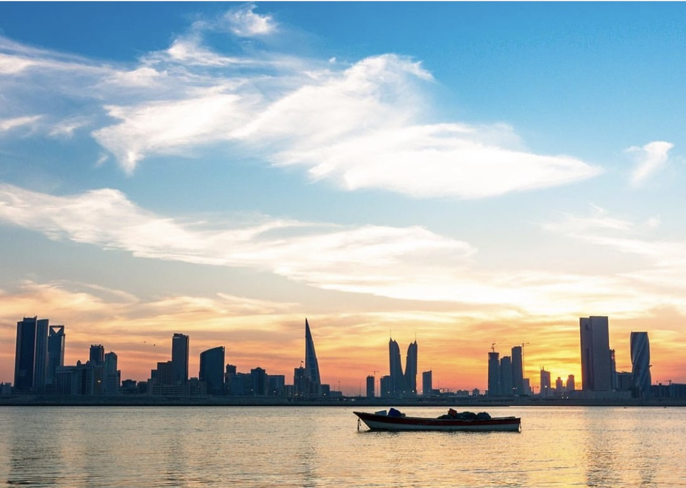
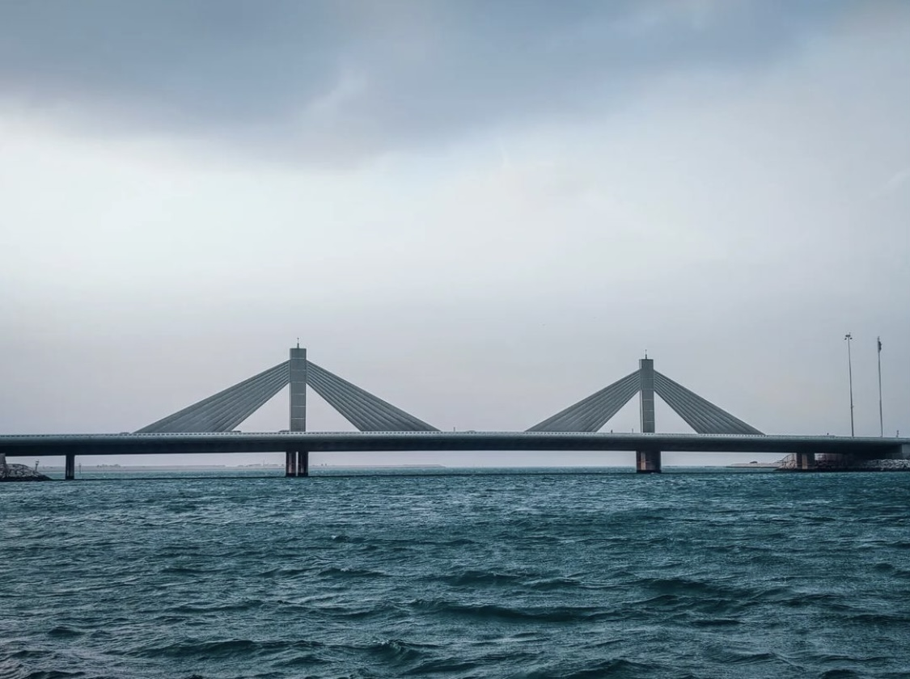
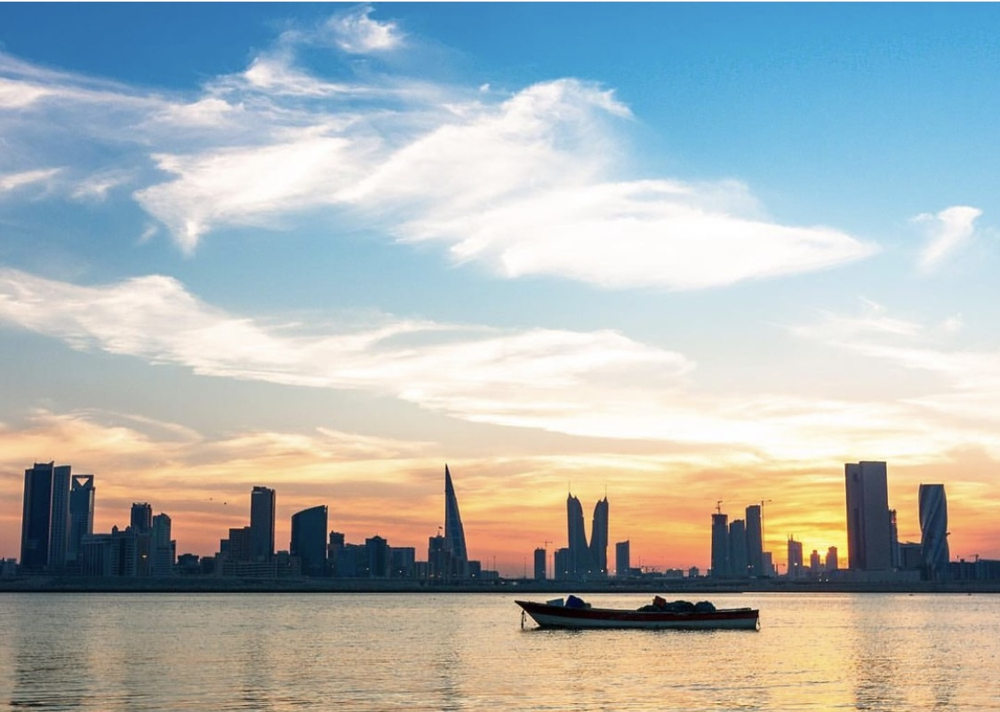
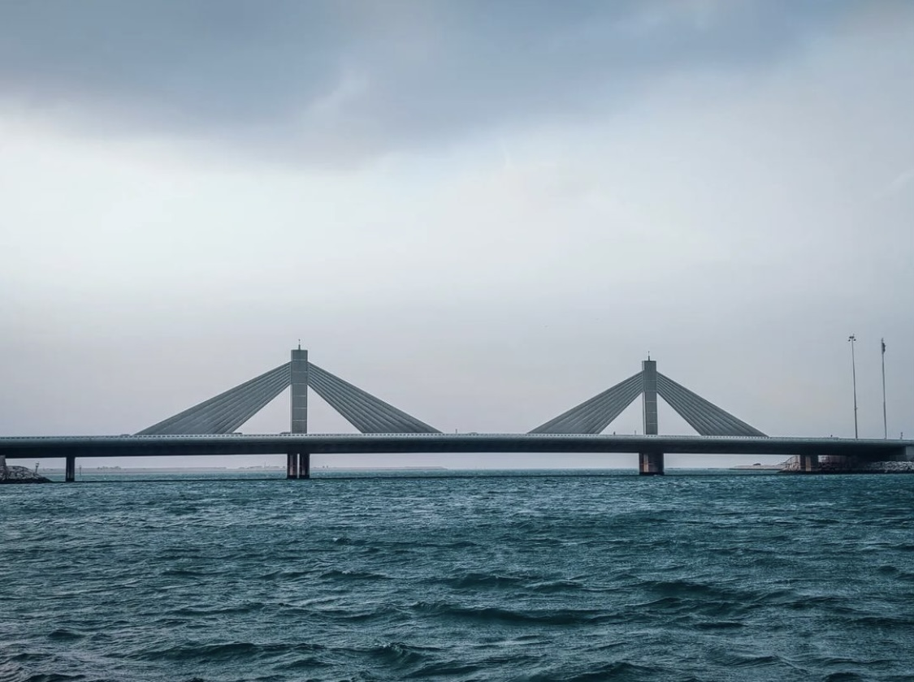
Amwaj Islands, you can spend 1 full day or two days at these groups of small artificial modern islands in Bahrain that have a contemporary nature. There you can experience modern cafes, restaurants and stay at luxurious hotels with lots of activities and entertainment options.
Images: Amwai Islands (Aritfical Island and Sunset)
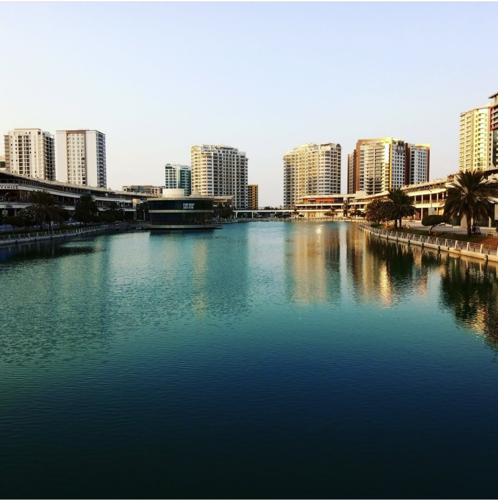 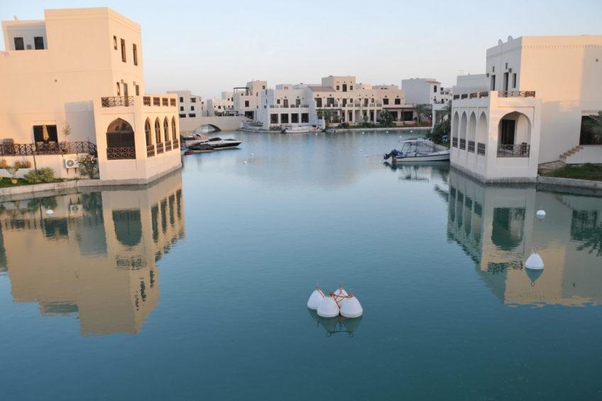
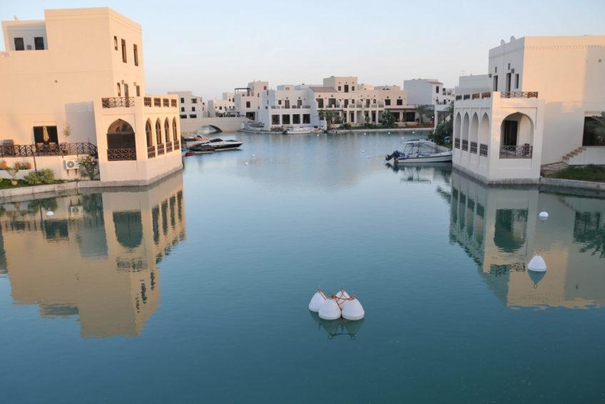
Hawar Islands, unlike the artificial Amwaj Islands, Hawar Islands are on the edge of Bahrain and located very close to another gulf country which is the State of Qatar. It is an uninhabited island and you can go and enjoy almost a full day there. It is uninhabited because it has rare species of birds and animals that are endangered. The animal that most of the tourists visit Hawar Islands for is the stunning Arabian Oryx.
Image: Hawar Islands (Arabian Oryx, Beach & Unhabited Island)
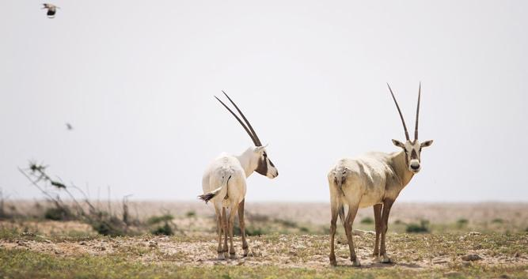 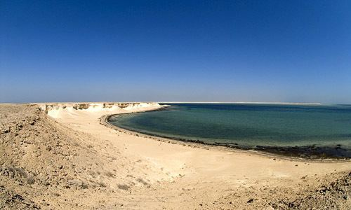 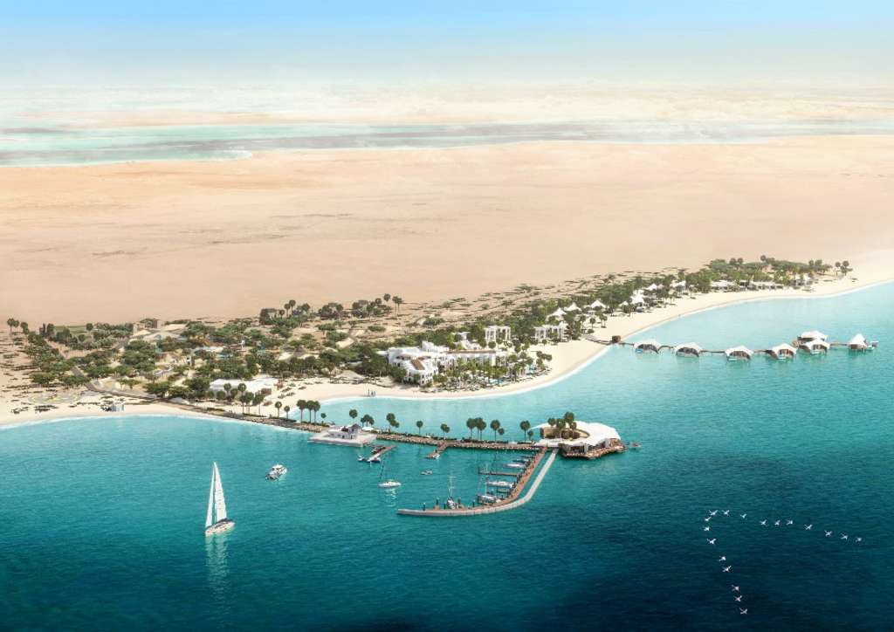Another modern attraction to visit is Beit Al Quran, it is a religious place that has a collection of Qurans from so many places of the world. There is also a library there that has books and manuscripts by famous writers from the Islamic era. Beit Al Quran has one of the very first translated copies of the Quran from Arabic to a foreign language.
Shopping malls are also very well known and popular places to visit in Bahrain that have modern branded and unbranded merchandise. They are excellent places to visit especially if it happens that you would be visiting Bahrain in the hot summer months, as they are all air-conditioned. Some of the well known malls are Bahrain City Center, Seef Mall and Al Alali mall.
Bahraini Cuisine
The Bahraini cuisine is influenced by their neighboring countries Persia and India. Machboos is the local traditional dish, it is an aromatic rice dish with cardamom, cloves, cinnamon and spices, and can be served as chicken, lamb or fish Machboos, and it is topped with caramelized onions and mixed nuts. The second famous dish there is Ghoozi, which is stuffed lamb with spices and rice. Last but not least is the Lamb Shawarma served in toasted pita bread and vegetables and sauce. In that region of the world, locals make good use of spices and herbs which you can also buy from Manama Souq that I mentioned about in old Bahrain.
Image: Chicken Machboos & Lamb Shawarma
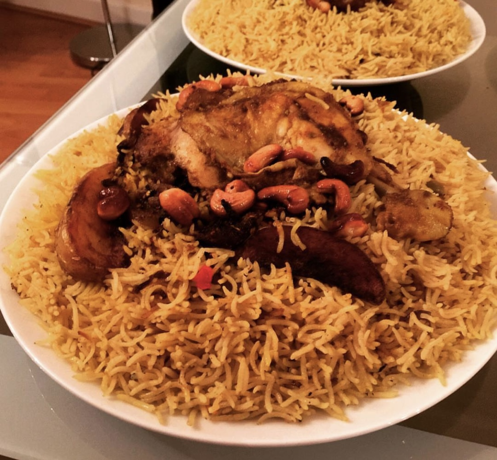 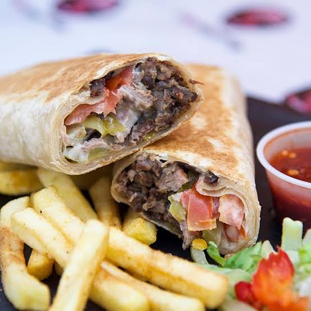The Sense of Islandness in Bahrain
The concept of Islandness in Bahrain is quite special. It is different from warm tropical islands even though Bahrain is one of them. It is also not the same as cold water islands. I guess the reason is that Bahrain is located in the Arabian Peninsula, which gives it a special feeling. In addition to that, what makes Bahrain so incompatible to others is its Arabic local people. Bahrain portrays the feeling of being in a desert, and being welcomed and taken care of by proud Arabic islanders offering their generous Arabian hospitality. You can apply the concept of sun, sea and sand there, but it is definitely not the prevailing taste. Bahrain has its own magic and charm, and let us say we take Maldives as an example since both are sun, sand and sea islands. In Maldives, the main objective for tourists is to focus on the beach, water, diving, the sun and the resorts over there. However, in Bahrain it goes beyond that. You can have a lovely time at the beaches over there, but at the same time the fascination part mainly relies on the interaction with the Arabian culture, its influence, its difference and the Middle Eastern mystical charm.
Bahraini people are also very proud islanders. They have a special connection to Bahrain that no one will understand unless you are Bahraini like them. They are also very hard working people who work in all the fields and industries in Bahrain. Majority of the Gulf countries depend of foreign expats for some jobs such as taxi drivers and salesperson, however in Bahrain the first thing you would notice is that taxis are being driven by Bahrainis. They work in all the fields with passion and pride that contributed in making the Bahraini Islanders’ identity so strong. I would describe my personal experience in Bahrain as visiting a sand, sea and sun island with a warm magical Arabian twist.
 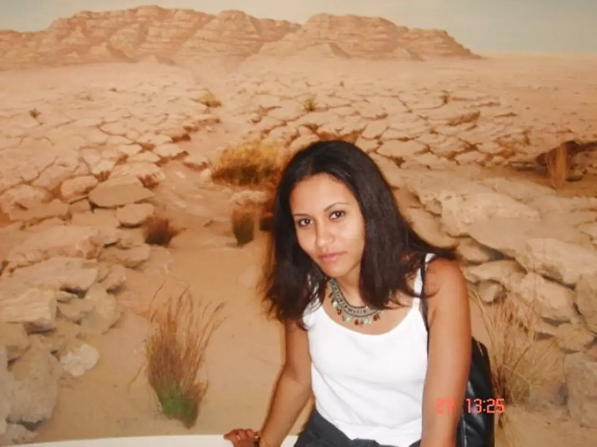
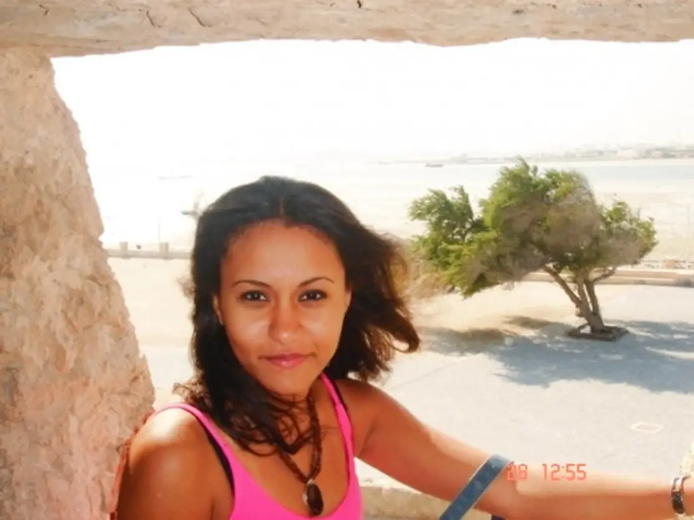
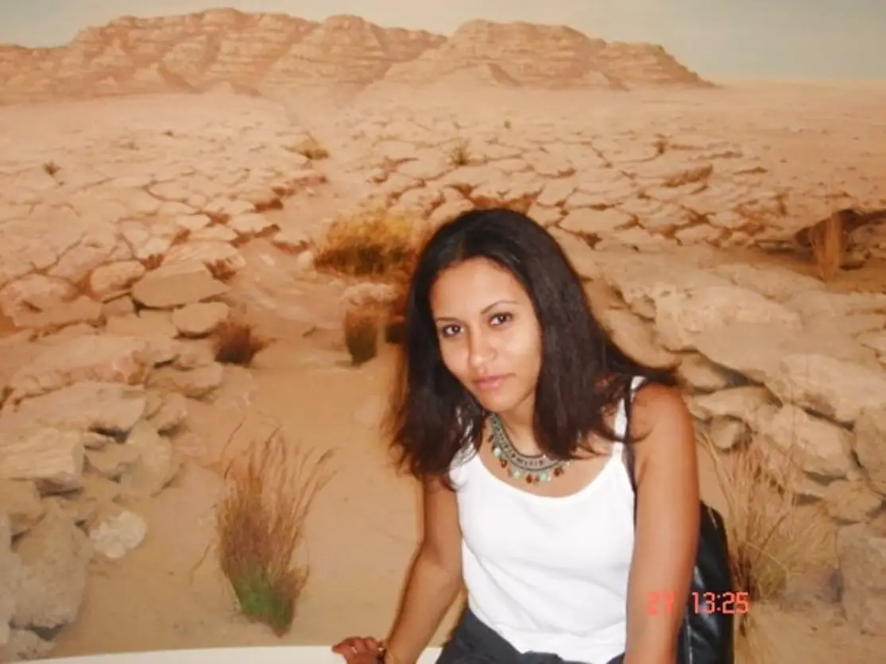
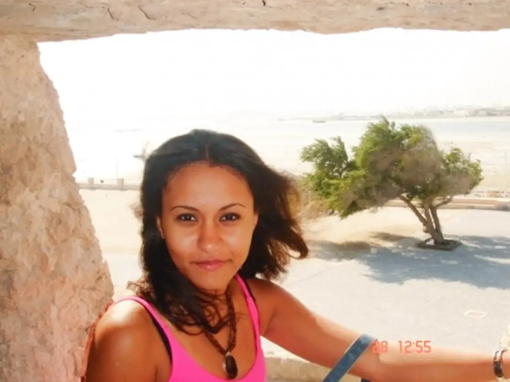